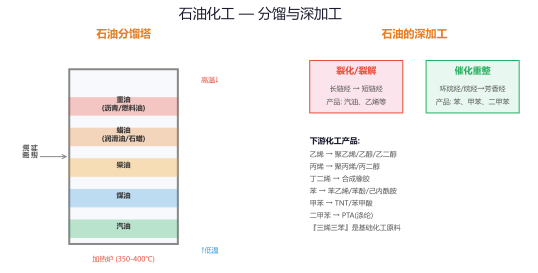
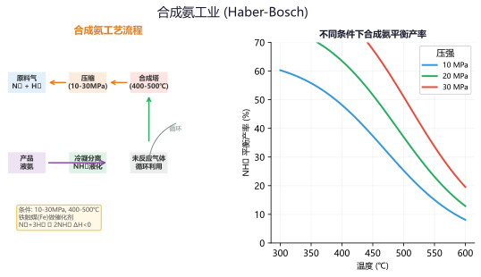
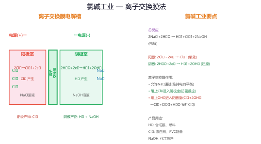
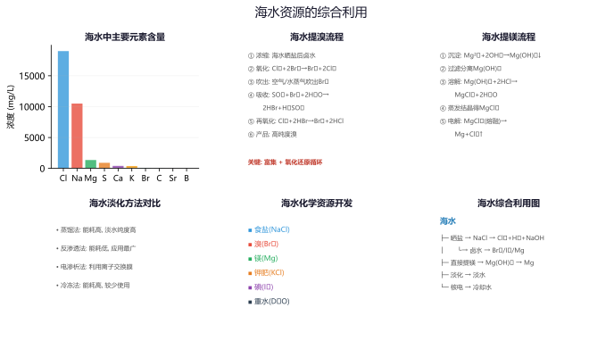
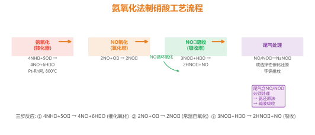
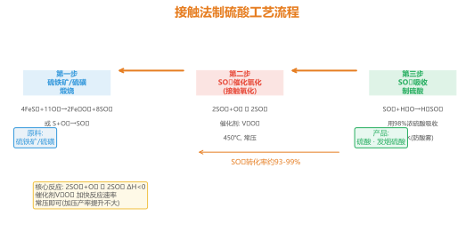

专题一：化学工艺流程基础
工艺流程图解读与核心思维
工艺流程题的特点：化学工艺流程题以实际工业生产为背景，将化工生产过程中的原料预处理、核心反应、产品分离提纯等环节呈现在流程图中，考查元素化合物知识、基本反应原理、实验操作等综合能力。此类题目是近年高考化学的必考题型，分值占比大（通常12-18分），综合性极强。
流程图的"三线"结构：
主线：原料 → 预处理 → 核心反应 → 分离提纯 → 产品（原料的转化路径）
支线：副产物、循环利用物质、处理排放的物质
条件线：温度、压强、催化剂、pH等反应条件标注
核心思维模型：
① 原料预处理：粉碎（增大接触面积）、焙烧/煅烧（改变结构）、浸取（酸/碱/水浸）、溶解等
② 核心反应：判断反应类型（氧化还原/复分解/热分解）、书写方程式、控制条件的目的是什么
③ 分离提纯：过滤、蒸发结晶、蒸馏萃取、洗涤干燥等方法的选择依据
④ 产品获得：从溶液中析出晶体的方法、产品的纯度检验
审题技巧：
• 读题时带着"箭头走向"看清楚原料到产品的路径
• 特别关注"回流""循环"的物质——往往是降低成本的关键
• 陌生方程式通常需要结合流程图中的条件推断产物
• 善于从题目给出的已知信息（溶解度、Ksp等数据）中提取解题线索

石油化工综合工艺流程示意图——原料经过分馏、裂解、重整等步骤得到多种化工产品
例题1：某工厂以石英砂（主要成分SiO₂）为原料制备高纯硅的工艺流程如下：
石英砂 ─[焦炭/高温]→ 粗硅 ─[HCl/300℃]→ SiHCl₃ ─[H₂/1100℃]→ 高纯硅
请回答：
(1) 写出石英砂与焦炭反应的化学方程式。
(2) SiHCl₃被H₂还原的反应中，氧化剂和还原剂分别是什么？
(3) 该流程中哪些物质可以循环利用？
解析：
(1) SiO₂ + 2C ─[高温]→ Si + 2CO↑
(2) SiHCl₃ + H₂ ─[1100℃]→ Si + 3HCl。SiHCl₃中的Si为+3价，被还原为0价Si，故SiHCl₃是氧化剂；H₂从0价升至+1价，H₂是还原剂。同时生成的HCl可回收循环利用。
(3) 循环利用的物质：HCl（可用于步骤2中与粗硅反应生成SiHCl₃）、H₂（可通过冷凝分离后循环使用）。
关键点：工业流程题要特别注意箭头上的反应物和生成物，判断哪些物质可以"循环"（回到前面的步骤再次使用）。
例题2：某学习小组设计从含碘废液（含I⁻、I₂）中回收碘的流程：
含碘废液 ─[加Na₂SO₃]→ 还原 ─[加H₂SO₄/NaNO₂]→ 氧化 ─[萃取/分液]→ I₂的CCl₄溶液 ─[蒸馏]→ 粗碘
(1) 写出还原步骤的离子方程式。
(2) 萃取后分液时，CCl₄层在上层还是下层？
(3) 如何判断粗碘的纯度？
解析：
(1) I₂ + SO₃²⁻ + H₂O → 2I⁻ + SO₄²⁻ + 2H⁺。Na₂SO₃将I₂还原为I⁻，便于后续富集纯化。
(2) CCl₄密度比水大，分液时CCl₄层在下层（I₂溶于CCl₄呈紫色）。
(3) 可用升华法纯化粗碘（碘易升华，加热使碘升华后冷凝收集），或通过熔点测定判断纯度——纯碘有固定熔点113.5°C。
方法总结：I₂在CCl₄中呈紫色，在水中呈棕黄色，可用萃取法从水溶液中提取I₂。
练习1：铝土矿（主要成分Al₂O₃·含Fe₂O₃、SiO₂）制备Al的工艺流程中，第一步用NaOH溶液浸取的目的是什么？写出相关反应方程式。
答案：将Al₂O₃转化为NaAlO₂溶解（Al₂O₃+2NaOH→2NaAlO₂+H₂O），Fe₂O₃不反应被过滤除去。SiO₂也会与NaOH反应（SiO₂+2NaOH→Na₂SiO₃+H₂O），后续通CO₂使Al(OH)₃沉淀而与硅酸盐分离。
练习2：从海带中提取碘的实验中，为什么要先将海带灼烧成灰？加H₂SO₄和H₂O₂的作用是什么？
答案：灼烧是为了除去有机物，使碘以I⁻形式留在灰烬中便于浸取。H₂SO₄提供酸性环境，H₂O₂将I⁻氧化为I₂（2I⁻+H₂O₂+2H⁺→I₂+2H₂O），H₂O₂作氧化剂。
专题二：无机化工流程
合成氨·硫酸·氯碱·硝酸工业
合成氨工业（哈伯法）：
N₂ + 3H₂ ⇌[催化剂,高温高压] 2NH₃ ΔH = -92.4 kJ/mol
条件控制：400-500°C（兼顾反应速率与平衡转化率，催化剂活性最佳）、10-30 MPa（高压有利于正反应，NH₃含量增加）、铁触媒（提高反应速率但不会提高平衡转化率）
尾气处理：未反应的N₂、H₂循环利用，NH₃通过冷凝分离
接触法制硫酸：
① 造气：S + O₂ ─[点燃]→ SO₂（或4FeS₂ + 11O₂ → 2Fe₂O₃ + 8SO₂）
② 催化氧化：2SO₂ + O₂ ⇌[V₂O₅,△] 2SO₃（ΔH = -196.6 kJ/mol）
③ 吸收：SO₃ + H₂O → H₂SO₄（工业上用98.3%浓硫酸吸收SO₃以避免形成酸雾）
条件分析：常压（常压下转化率已较高≈97%）、400-500°C（平衡速率综合考虑）、V₂O₅催化剂
氯碱工业：
电解饱和食盐水：2NaCl + 2H₂O ─[电解]→ 2NaOH + Cl₂↑ + H₂↑
阳离子交换膜法：只允许Na⁺通过，防止Cl₂与NaOH反应、防止H₂与Cl₂混合爆炸
产物应用：Cl₂用于制漂白剂、PVC；H₂用于合成氨、盐酸；NaOH广泛用于化工

合成氨工业工艺流程——氮气和氢气在铁触媒催化下合成氨，未反应气体循环利用
例题3：合成氨反应N₂ + 3H₂ ⇌ 2NH₃ ΔH = -92.4 kJ/mol，请分析：
(1) 为什么工业上选择400-500°C而不是更低的温度？
(2) 增大压强对平衡和速率有何影响？为什么实际不用更高的压强？
(3) 从平衡移动角度分析，如何提高NH₃的产率？
解析：
(1) 合成氨是放热反应，低温有利于平衡正向移动（NH₃含量更高），但低温下反应速率过慢，达到平衡需很长时间。400-500°C时：①催化剂活性最高；②反应速率足够快；③平衡转化率仍可达30-40%（通过循环提高总转化率）。
(2) 增大压强既提高反应速率（浓度增大）又使平衡正向移动（气体分子数减少的方向）。但压强过高对设备要求极高（成本剧增），综合考虑10-30 MPa是经济可行的范围。
(3) 提高NH₃产率的方法：①增大压强；②及时分离出NH₃（破坏平衡，使反应继续正向进行）；③适当补充反应物N₂、H₂。
注意：催化剂不能提高平衡转化率，只能缩短达到平衡的时间。
例题4：接触法制硫酸中，吸收塔为什么用98.3%浓硫酸吸收SO₃而不用水？
若用H₂O吸收SO₃：SO₃ + H₂O → H₂SO₄，有何缺点？
解析：
SO₃与水反应虽生成H₂SO₄，但反应放热剧烈，形成大量酸雾（H₂SO₄小液滴悬浮在气体中），使吸收效率降低且腐蚀设备。用98.3%的浓硫酸吸收SO₃时：
① 浓硫酸中水含量极低，几乎不产生酸雾；
② SO₃在浓硫酸中溶解度大，吸收效率高（>99%）；
③ 吸收后得到发烟硫酸（H₂SO₄·xSO₃），再稀释到所需浓度。
工业细节：吸收操作采用逆流吸收（SO₃气体从塔底进入，浓硫酸从塔顶喷淋而下），提高吸收效率。
练习3：氯碱工业中，阳离子交换膜的作用有哪些？若没有离子交换膜，电解过程中会出现什么问题？
答案：阳离子交换膜只允许Na⁺通过，阻止Cl⁻、OH⁻和气体分子通过。如果没有膜：①Cl₂与NaOH反应生成NaClO（Cl₂+2NaOH→NaCl+NaClO+H₂O），降低产物纯度；②H₂和Cl₂混合可能爆炸。
练习4：接触法制硫酸中，沸腾炉出来的炉气需要净化（除尘、洗涤、干燥），为什么要进行净化操作？
答案：炉气中含有粉尘、水蒸气等杂质，会覆盖催化剂V₂O₅表面使其中毒（活性降低或丧失），水蒸气还会与SO₃反应形成酸雾腐蚀设备。
专题三：有机化工流程
石油化工·煤化工·生物质化工
石油化工基础知识：
分馏：物理变化，利用沸点不同分离出汽油、煤油、柴油等馏分
裂化：化学变化，将长链烃断裂为短链烃（提高汽油产量和质量）
C₁₆H₃₄ ─[高温]→ C₈H₁₈ + C₈H₁₆（十六烷裂化为辛烷和辛烯）
裂解：更深度的裂化，获得乙烯、丙烯等基础化工原料
重整：改变烃的分子结构（直链→支链/环状），提高汽油辛烷值
煤化工：
干馏：隔绝空气加强热，得到焦炭、煤焦油、粗氨水、焦炉气（化学变化）
气化：C + H₂O(g) ─[高温]→ CO + H₂（水煤气反应）
液化：间接液化（CO+H₂ → 甲醇/烃类）、直接液化（加氢液化）
典型有机合成流程：
乙烯 → 乙醇：CH₂=CH₂ + H₂O \overset{\text{H₃PO₄}}{\underset{300°C/7MPa}{→}} CH₃CH₂OH
乙烯 → 乙酸：CH₂=CH₂ → CH₃CHO → CH₃COOH（两步氧化）
乙烯 → 聚乙烯：nCH₂=CH₂ ─[催化剂]→ [CH₂-CH₂]ₙ（加聚反应）

氯碱工业电解饱和食盐水工艺流程——阳离子交换膜法生产Cl₂、H₂和NaOH
例题5：由石油裂解得到的乙烯为原料合成乙酸乙酯的流程如下：
乙烯 ─[H₂O/催化剂]→ A ─[O₂/催化剂]→ B ─[?]→ 乙酸乙酯
(1) 写出A和B的结构简式。
(2) A→B属于什么反应类型？
(3) 写出B转化为乙酸乙酯的化学方程式。
解析：
(1) A为CH₃CH₂OH（乙醇），B为CH₃COOH（乙酸）。
(2) A→B是氧化反应：CH₃CH₂OH ─[Cu/Ag/△]→ CH₃CHO ─[O₂]→ CH₃COOH。具体：乙醇先氧化为乙醛，再进一步氧化为乙酸。
(3) CH₃COOH + CH₃CH₂OH ⇌[浓H₂SO₄/△,酯化反应] CH₃COOCH₂CH₃ + H₂O
反应条件：浓硫酸做催化剂和吸水剂（促进平衡正向移动），加热加快反应速率，饱和Na₂CO₃溶液收集产物（中和乙酸、溶解乙醇、降低乙酸乙酯溶解度）。
例题6：煤的气化和液化是煤化工的核心技术。已知煤的气化反应：
C(s) + H₂O(g) → CO(g) + H₂(g) ΔH = +131.3 kJ/mol
(1) 从能量角度判断该反应是放热还是吸热？
(2) 若用气化得到的CO和H₂合成甲醇（CO+2H₂→CH₃OH），该反应属于什么类型？
(3) 煤的液化有直接液化和间接液化两种途径，简述其区别。
解析：
(1) ΔH > 0，为吸热反应，反应需要高温条件提供能量。
(2) CO+2H₂→CH₃OH属于加成反应（或还原反应），CO中的C为+2价，CH₃OH中C为-2价，C被还原，H₂作还原剂。
(3) 直接液化：煤在高温高压下加氢，直接转化为液态烃类（类似"煤+氢气→油"）；
间接液化：先将煤气化为CO和H₂（合成气），再通过F-T合成（费托合成）将合成气转化为烃类。
间接液化的优点是煤种适应性广、产品可控性好（可选择性生产汽油、柴油、烯烃等）。
练习5：石油的裂化和裂解有什么区别？裂解的主要目的是获得什么产物？
答案：裂化是在高温下将长链烃断裂为短链烃，目的是提高汽油的产量和质量（获得更多轻质油）。裂解是更深度的裂化，在更高温度下进行，主要目的是获得乙烯、丙烯等基础化工原料（三烯三苯）。
练习6：以乙烯为原料合成聚乙烯（PE），写出反应方程式并说明该反应属于什么类型。
答案：nCH₂=CH₂ → [CH₂-CH₂]ₙ（催化剂条件下），属于加聚反应（加成聚合）。聚乙烯是应用最广泛的塑料之一，无毒可作食品包装袋。
专题四：绿色化学与循环利用
原子经济性·清洁生产·循环经济
绿色化学的十二条原则（核心）：
① 预防污染：从源头减少污染物的产生
② 原子经济性：反应物中的原子尽可能多地进入目标产物
③ 更安全的合成：使用和产生低毒/无毒的物质
④ 设计安全的化学品：产品在发挥功能的同时毒性尽可能低
⑤ 更安全的溶剂和助剂：尽可能不使用有毒溶剂
⑥ 提高能源效率：在常温常压下进行反应
原子经济性（Atom Economy）：
原子经济性% = (目标产物的分子量 / 所有反应物分子量之和) × 100%
加成反应的原子经济性为100%（所有原子都进入目标产物）
取代/消除反应通常原子经济性较低（有副产物生成）
循环利用的典型策略：
• 工业三废处理：废气（SO₂→H₂SO₄、CO→CO₂回收）、废水（重金属沉淀/离子交换）、废渣（矿渣→建筑材料）
• 催化剂循环：贵金属催化剂的回收再生
• 溶剂回收：有机溶剂的蒸馏回收、循环再用
• 余热利用：工业余热用于发电、供暖

海水化学资源综合利用流程——从海水中提取多种有用物质体现了循环经济理念
例题7：环氧乙烷（C₂H₄O）的传统制法为：CH₂=CH₂ + Cl₂ + Ca(OH)₂ → C₂H₄O + CaCl₂ + H₂O，现代催化氧化法为：2CH₂=CH₂ + O₂ ─[Ag]→ 2C₂H₄O。
(1) 分别计算两种方法的原子经济性。
(2) 从绿色化学角度分析催化氧化法的优点。
解析：
(1) 传统法：CH₂=CH₂(28) + Cl₂(71) + Ca(OH)₂(74) → C₂H₄O(44) + CaCl₂(111) + H₂O(18)，原子经济性 = 44/(28+71+74) × 100% = 44/173 × 100% ≈ 25.4%。
催化氧化法：2CH₂=CH₂(56) + O₂(32) → 2C₂H₄O(88)，原子经济性 = 100%（所有原子都进入目标产物）。
(2) 催化氧化法的优点：①原子经济性100%，无副产物，零排放；②不使用有毒的Cl₂，生产过程更安全；③不产生CaCl₂等固体废弃物；④步骤更短，能耗更低。
绿色化学核心：现代化学工业的方向是从"末端治理"转向"源头预防"。
例题8：海水综合利用的常见流程如下：
海水 ─[蒸发]→ 粗盐 ─[精制]→ 饱和食盐水 ─[电解]→ NaOH + Cl₂ + H₂
同时从海水提镁：Mg²⁺ ─[Ca(OH)₂]→ Mg(OH)₂ ─[HCl]→ MgCl₂ ─[电解]→ Mg
请分析：
(1) 粗盐精制中为什么要加BaCl₂、NaOH、Na₂CO₃？
(2) 电解MgCl₂时为何要在熔融状态下进行？
(3) 该流程体现了哪些循环利用的理念？
解析：
(1) BaCl₂除去SO₄²⁻（Ba²⁺+SO₄²⁻→BaSO₄↓）；NaOH除去Mg²⁺（Mg²⁺+2OH⁻→Mg(OH)₂↓）；Na₂CO₃除去Ca²⁺和过量Ba²⁺（Ca²⁺+CO₃²⁻→CaCO₃↓，Ba²⁺+CO₃²⁻→BaCO₃↓）。注意：Na₂CO₃要在BaCl₂之后加入，以便同时除去过量的Ba²⁺。
(2) MgCl₂是离子化合物，但溶于水时水解（MgCl₂+2H₂O→Mg(OH)₂+2HCl），电解水溶液得不到金属镁，必须在熔融状态下电解（无水MgCl₂）。
(3) 循环利用：Cl₂可用于制盐酸（H₂+Cl₂→2HCl），盐酸又用于溶解Mg(OH)₂，HCl中的Cl⁻得到循环利用，体现了原子经济性。
综合题思路：海水综合利用考察元素守恒和循环利用的理念，各步骤之间相互关联。
练习7：下列反应中原子经济性最高的是（ ）
A．CH₄+Cl₂→CH₃Cl+HCl B．N₂+3H₂→2NH₃
C．2CH₃CH₂OH→CH₃CH₂OCH₂CH₃+H₂O D．Fe+CuSO₄→FeSO₄+Cu
答案：B。合成氨反应中N₂和H₂全部转化为NH₃，原子经济性为100%。A是取代反应有副产物HCl；C是脱水反应有水生成；D是置换反应有多种产物。
练习8：某工厂的废水中含有Cr₂O₇²⁻，采用FeSO₄还原法处理：Cr₂O₇²⁻+6Fe²⁺+14H⁺→2Cr³⁺+6Fe³⁺+7H₂O，然后加碱调pH使Cr³⁺沉淀为Cr(OH)₃。请分析这样处理的优缺点。
答案：优点是反应彻底，Cr(VI)（剧毒）被还原为Cr(III)（毒性大幅降低），沉淀后从水中除去。缺点是消耗大量FeSO₄，且产生大量含铁污泥，需要进一步处理。更好的方案是离子交换法回收铬或电解法直接还原。
专题五：工业流程中的计算
产率·转化率·纯度·收支计算
核心计算公式：
转化率 = (反应消耗的反应物量 / 初始投入的反应物量) × 100%
产率 = (实际产物的量 / 理论产物的量) × 100%
纯度 = (纯物质质量 / 样品总质量) × 100%
原子利用率 = (目标产物总原子量 / 所有产物总原子量) × 100%
多步反应的计算技巧：
• 关系式法：利用各步反应方程式找出初始反应物和最终产物之间的物质的量关系，一步计算
• 例：FeS₂ → 2SO₂ → 2SO₃ → 2H₂SO₄，因此FeS₂ ~ 4H₂SO₄（硫元素守恒）
• 元素守恒法：复杂流程中抓住某一种关键元素在整个过程中守恒（或损失量已知）
• 差量法：利用固体质量变化（或气体体积变化）建立等式

硝酸工业生产工艺流程——氨氧化法（Ostwald法）三步反应制备硝酸
例题9：工业上用黄铁矿（FeS₂）制硫酸，已知含FeS₂质量分数为75%的黄铁矿矿石1000吨，在反应过程中硫损失5%（进入废渣等），问理论上可制得98%的浓硫酸多少吨？
解析：
关系式法：由FeS₂ → 2H₂SO₄（硫元素守恒）
FeS₂的摩尔质量 = 56 + 32×2 = 120 g/mol
1000吨矿石中FeS₂的质量 = 1000 × 75% = 750吨
FeS₂的物质的量 = 750×10⁶ g / 120 g/mol = 6.25×10⁶ mol
理论上生成H₂SO₄的物质的量 = 2 × 6.25×10⁶ = 1.25×10⁷ mol
考虑损失5%：实际生成H₂SO₄的物质的量 = 1.25×10⁷ × (1-5%) = 1.1875×10⁷ mol
H₂SO₄的质量 = 1.1875×10⁷ × 98 = 1.16375×10⁹ g = 1163.75吨
98%浓硫酸的质量 = 1163.75 / 98% = 1187.5吨
答案：约1187.5吨 98%的浓硫酸。
例题10：合成氨工厂投料N₂和H₂的体积比为1:3，测得反应后（未分离NH₃）的气体总体积较反应前减少了10%（同温同压），求：
(1) N₂的转化率。
(2) 反应后气体中NH₃的体积分数。
解析：
N₂ + 3H₂ ⇌ 2NH₃，反应前后气体体积变化ΔV = -2（每反应1 mol N₂，体积减少2 mol）
设初始N₂为a mol，H₂为3a mol，总体积 = 4a
反应后气体体积较反应前减少10%，即减少 = 4a × 10% = 0.4a
每反应1 mol N₂体积减少2 → 反应的N₂ = 0.4a/2 = 0.2a
(1) N₂转化率 = 0.2a/a × 100% = 20%
(2) 反应后气体组成：N₂ = a-0.2a = 0.8a，H₂ = 3a-0.6a = 2.4a，NH₃ = 0.4a
总体积 = 0.8a+2.4a+0.4a = 3.6a
NH₃体积分数 = 0.4a/3.6a × 100% ≈ 11.1%
体积法：气体的体积比等于物质的量之比（同温同压）。气体分子数减少的量 = 生成NH₃的量的一半。
练习9：某硝酸工厂每天生产63吨质量分数为70%的硝酸，若氨的利用率为92%，理论上每天需要氨气多少吨？
答案：NH₃→HNO₃（氮元素守恒，不考虑中间损失），理论上1 mol NH₃产生1 mol HNO₃。实际生产HNO₃质量=63×70%=44.1吨，n(HNO₃)=44.1×10⁶/63=7×10⁵ mol。需NH₃质量为7×10⁵×17/(92%)=1.293×10⁷ g=12.93吨。关系中：NH₃~HNO₃（Ostwald法中氨全部转化为硝酸）。
练习10：氯碱工业电解饱和食盐水，若通过电解槽的电流为1×10⁵ A，电解24小时，理论上可生产多少吨NaOH？（F=96500 C/mol）
答案：2NaCl+2H₂O→2NaOH+Cl₂+H₂，每生成1 mol NaOH转移1 mol e⁻。总电量=1×10⁵×24×3600=8.64×10⁹ C，转移电子=8.64×10⁹/96500=8.95×10⁴ mol。m(NaOH)=8.95×10⁴×40=3.58×10⁶ g=3.58吨。
专题六：综合应用
陌生流程分析·新情境问题
应对陌生工业流程的策略：
① 通读全题：先看"原料→产品"的宏观路径，不要纠结细节
② 抓箭头方向：进入箭头的是反应物，出来的是产物，回环的是循环物质
③ 框内分析：每个"框"代表一个操作或反应，框外的标注是重要信息
④ 锁定考点：结合设问回读对应环节，不必理解全部细节
⑤ 迁移应用：结合已有知识（元素化合物、反应原理、实验操作）解答陌生情境
高频考查点总结：
• 方程式书写：陌生氧化还原方程式的配平（注意介质酸碱性）
• 分离操作判断：过滤（固液分离）、蒸发（溶液→晶体）、蒸馏（液液分离）、萃取（溶质转移）
• 条件控制分析：温度过高/过低的后果、pH控制的作用、加入某种试剂的目的
• 循环与副产物：指出可循环利用的物质、副产物的用途或处理方式

接触法制硫酸工艺流程——硫磺或黄铁矿为原料，经造气、催化氧化、吸收三步生产硫酸
例题11（综合流程题）：一种从含银废催化剂（含Ag、Al₂O₃、SiO₂等）中回收银的工艺流程如下：
废催化剂 ─[稀硫酸]→ 浸取 ─[过滤]→ 滤渣（含Ag） ─[稀HNO₃]→ 溶解 ─[过滤]→ 滤液 ─[加NaCl]→ AgCl↓ ─[加NH₃·H₂O]→ [Ag(NH₃)₂]⁺ ─[加N₂H₄]→ 银粉
(1) 第一步用稀硫酸浸取的目的是什么？
(2) 写出Ag溶于稀HNO₃的化学方程式。
(3) 加入NH₃·H₂O将AgCl溶解的原理是什么？
(4) N₂H₄（联氨）将[Ag(NH₃)₂]⁺还原为Ag的离子方程式。
解析：
(1) 稀硫酸浸取的目的是将Al₂O₃（两性氧化物但碱性为主）溶解：Al₂O₃+3H₂SO₄→Al₂(SO₄)₃+3H₂O，而Ag和SiO₂不溶于稀硫酸，通过过滤实现与Ag的分离（Al进入溶液被除去）。
(2) 3Ag + 4HNO₃（稀）→ 3AgNO₃ + NO↑ + 2H₂O。Ag与稀硝酸反应生成AgNO₃、NO和水（注意：不是H₂！）。
(3) AgCl + 2NH₃·H₂O → [Ag(NH₃)₂]Cl + 2H₂O。AgCl虽难溶于水，但能与氨水形成稳定的银氨配合物而溶解（配位反应）。
(4) 4[Ag(NH₃)₂]⁺ + N₂H₄ + 4OH⁻ → 4Ag↓ + N₂↑ + 8NH₃ + 4H₂O。联氨是还原剂，Ag⁺被还原为Ag单质，自身被氧化为N₂。
综合能力：本题综合考查了金属氧化物与酸反应、金属与硝酸的氧化还原反应、配位反应、氧化还原方程式的配平——四个核心知识点。
例题12（新情境）：研究人员设计了一种"太阳能驱动的CO₂转化"工艺，利用太阳能将CO₂转化为甲酸（HCOOH）和甲醇（CH₃OH），流程如下：
CO₂ ─[光催化]→ HCOOH + CH₃OH
已知该过程涉及光催化剂TiO₂（二氧化钛），在紫外光照射下产生电子-空穴对，实现CO₂的还原和H₂O的氧化。
(1) CO₂转化为HCOOH的过程中，碳的化合价如何变化？
(2) 从绿色化学角度，该工艺有何优势？
(3) 请从化学键角度分析，实现该转化面临的主要挑战是什么？
解析：
(1) CO₂中C为+4价，HCOOH中C为+2价（HCOOH中H为+1，O为-2，则C为+2），化合价降低，CO₂被还原。
(2) 绿色化学优势：①利用太阳能（可再生能源）驱动反应，不额外消耗化石能源；②将温室气体CO₂转化为有价值的化学品（碳捕集与利用CCU）；③使用光催化剂TiO₂（无毒、地球储量丰富）；④常温常压条件温和。
(3) 主要挑战：①CO₂的C=O双键键能很高（约803 kJ/mol），需要大量能量才能断裂；②光催化量子效率较低（太阳光利用率有限）；③产物选择性控制难度大（CO₂可还原为多种产物：CO、HCOOH、CH₃OH、CH₄等）。
未来方向：发展可见光响应的催化剂、提高转化效率和选择性是实现CO₂光催化转化的关键。
练习11：以菱镁矿（主要成分MgCO₃，含CaCO₃、SiO₂等杂质）制备Mg的工艺流程如下：
菱镁矿 ─[焙烧]→ 轻烧镁 ─[加水/调pH]→ 过滤除杂 ─[加NH₄HCO₃]→ MgCO₃沉淀 ─[煅烧]→ MgO ─[电解]→ Mg
请回答：焙烧的目的？过滤除杂除去的是什么？加入NH₄HCO₃的作用？
答案：焙烧使MgCO₃分解为MgO和CO₂（MgCO₃→MgO+CO₂↑），同时除去部分有机物。过滤除杂除去Ca²⁺（调pH使Ca²⁺生成CaCO₃沉淀或Ca(OH)₂沉淀）和SiO₂（不反应直接过滤除去）。NH₄HCO₃提供HCO₃⁻，与Mg²⁺反应生成MgCO₃沉淀（Mg²⁺+2HCO₃⁻→MgCO₃↓+CO₂↑+H₂O），进一步纯化镁。
练习12：某工厂利用钛铁矿（FeTiO₃）制备TiO₂的工艺流程中，第一步用浓硫酸在高温下处理钛铁矿：FeTiO₃+2H₂SO₄→TiOSO₄+FeSO₄+2H₂O，然后水解TiOSO₄得到TiO₂·nH₂O（偏钛酸），煅烧后得TiO₂。请判断各步骤的反应类型。
答案：第一步是复分解反应（强酸制弱酸，H₂SO₄取代了钛酸根）；水解是分解反应（TiOSO₄+2H₂O→TiO₂·nH₂O↓+H₂SO₄）；煅烧是分解反应（TiO₂·nH₂O→TiO₂+nH₂O）。这个流程是硫酸法制备钛白粉（TiO₂颜料）的核心工艺。
练习13（拓展思考）：某工业园区将硫酸厂、炼铁厂、水泥厂建在一起，请从循环经济和绿色化学的角度分析这样布局的优点。
答案：①硫酸厂的废渣（Fe₂O₃等）可作为炼铁厂的原料；②炼铁厂的高炉煤气（含CO）可作为燃料供硫酸厂使用；③硫酸厂的废热可用于发电或供暖；④硫酸厂产生的蒸汽可用于炼铁厂；⑤水泥厂可利用硫酸厂和炼铁厂的废渣（矿渣）作为水泥原料。这种布局实现了废弃物的资源化利用，体现了循环经济的"减量化、再利用、资源化"原则。